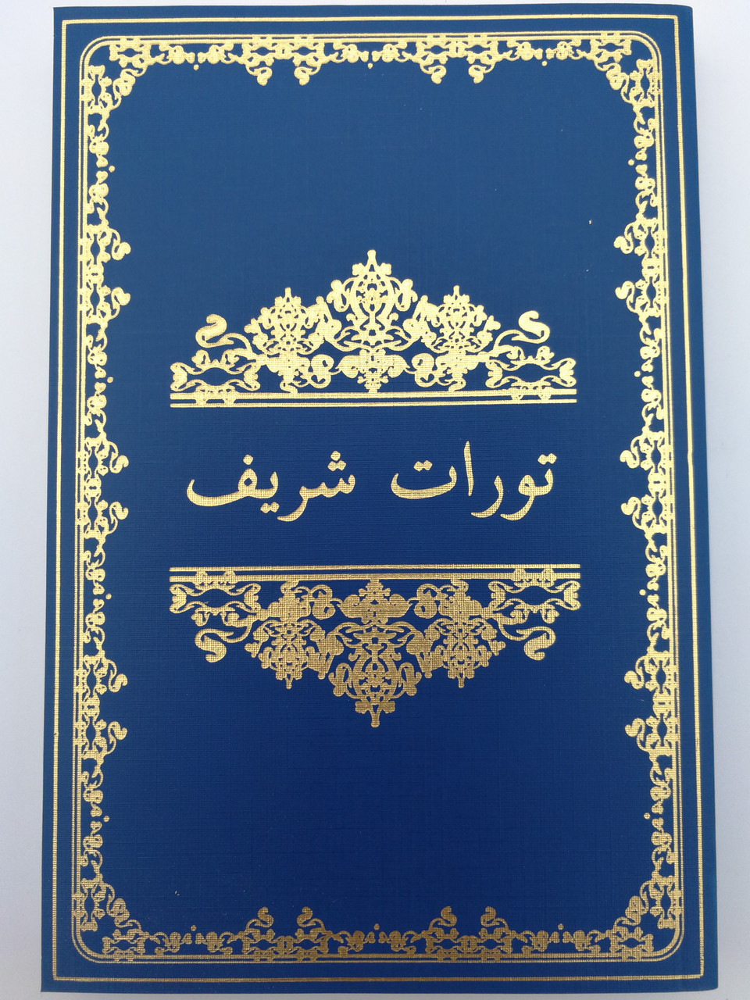

ولې انجیل ولولئ؟
د عیسی پیروان هغه څوک دی چې:
- باور لري چې عیسی مسیح د خدای زوی دی
- عیسی د نجات ورکوونکي په توګه منلی دی
- د عیسی د تعلیماتو او زموږ د ژوند لپاره د هغه پلان تعقیبولو سره د ژوند کولو پریکړه وکړه.
د عیسی پیروان په دې باور دي چې مقدس انجیل انسانانو ته د خدای پیغام دی.
دوی پوهیږي چې ، که دوی واقعیا خدای په شخصي ډول پیژني چې هغه زموږ لپاره اراده کړې ، دوی اړتیا لري انجیل ولولي. د عیسی ریښتیني پیروان کیدو لپاره ، دا هغه خلک دي چې هوډ یې کړی چې د هغه طریقې سره سم ژوند وکړي کله چې هغه دلته په ځمکه کې و ، موږ باید انجیل ولولو. موږ اړتیا لرو پوه شو چې ولې موږ باور لرو چې عیسی د خدای زوی و ، او د هغه پیښو په اړه چې خدای د دې لامل شوی چې هغه ځمکې ته زموږ ژغورونکی واستول شي.
که تاسو د انجیل په لوستلو لوی شوي نه یاست او د دې په اړه ډیر څه (که څه هم) نه پوهیږئ ، تاسو یوازې نه یاست! دا کوچنی کتاب د دې لپاره دی چې تاسو سره مرسته وکړي چې پوه شي چې انجیل څه ډول کتاب دی:
- دا څنګه لیکل شوی
- په انجیل کې د کیسې یا پاسه موندلو څرنګوالی
- اصلي کیسه بائبل بیانوي
خدای به ستاسو روح ته برکت درکړي او تاسو به نږدې کړي ځکه چې تاسو د انجیل لوستلو له لارې هغه پیژنئ!